Summer in the Pennines?
Watching the tracking recently, it’s felt like the Sky Gods might have something against the Pennines. Loads of XCs in Derbyshire, pilots all over the sky in the Lakes and us grabbing local bits and pieces where we can.
You’ve been out and about though, some putting in those XC flights from the Midlands, others abroad and even your newsletter editor managed to blunder into something doing 5m/s last weekend. Wheeee!
This week’s forecast says summer might really be here. Shhhh, don’t look at it, you’ll scare it away.
editor@penninesoaringclub.org.uk.
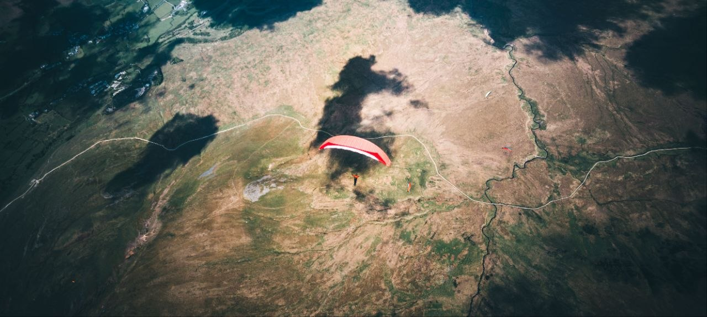
{kind=link}
Tony Colombat 1949-2026
So, farewell then, Tony. A quarter of a century on from his friends and family being told that he’d probably be permanently confined to a bed, never mind walk again, Tony Colombat finally shuffled off his mortal coil. Following his tragic mountain biking accident at the turn of the millennium, Tony confounded the experts by living independently and actively despite his terrible injuries: he drove a highly adapted car, became a familiar sight in his hometown of Tyldesley on his recumbent trike, went abroad on holidays, including skiing, and continued to play an active role in the club. Overcoming adversity must have been built into his DNA.
I first got to know Tony in the 90’s when he started paragliding, and we shared many a trip to the hills in the early days of our sport. He was determined to make headway in flying and had started training to be an instructor, but in a cruel twist of fate he had just received enhanced early retirement from his job as an IT teacher when the MTB crash robbed him of his dream of moving to Chamonix to teach paragliding in the summer and skiing in the winter. Even while he was learning to be an instructor, many of his students were full of praise for his patient, careful methods and statements like “I wouldn’t be the success I am today without you” were common. Jim, a fellow trainee instructor, used to tease him by saying: “you spend your working days shouting at students to stop running, and at the weekends to keep running!” Another memory from those days concerned a bag of sweets; in Tony’s car woe betide anyone who reached into the bag without asking. On another occasion when Chris was driving, a similar bag of treats lay in the centre console, so Tony asked politely if he could help himself. “No need to ask” was the reply, so Tony dived in. A good handful of doggy snacks were hoovered up, much to the amusement of all.
Despite having only limited movement in one hand, Tony continued to produce the PSC newsletter for many years during the noughties until electronic information replaced the need for hard copy, although this is still missed my many. He was also club president for a long time until changed regulations meant that non-BHPA members couldn’t remain in the club. When we had meetings in the upstairs room of a pub, four of us would manhandle him in his wheelchair up the steep, narrow stairs, which was terrifying. I imagine Tony found it pretty scary too…
In recent years, life clearly decided it hadn’t given Tony enough of a hard time – the first stroke weakened him to the point where he could no longer transfer from bed to chair or get into his trike. Although not having any religious faith, he was welcomed into the local church community, and several of the parishioners went far out of their way to assist him, providing a great deal of practical help and emotional support. Later strokes even took away the last limited movement from his left hand, leaving him totally dependent on his carers and friends, who all went way beyond the call of duty to make him as comfortable as possible.
It is a cruel irony that someone confined indoors and out of the sun for much of his life should be finally brought down by a malignant melanoma. While it may seem insensitive to reveal this, death certificates are public records, and maybe Tony’s legacy to the outdoor community could be a wake-up call to cover up and slap on the sunscreen when we’re out in the sun. So, this was Tony - one of a kind. Uncompromising, intolerant of fools, with a profound sense of right and wrong, determined always to be independent. Whether on skis, bike or paraglider he was never boastful of his considerable abilities; he just let his actions tell the tale. I don’t think I ever heard him complain, from the first days in hospital when he could only blink to communicate, to the very end where his only ambition was to get home again and back to living his own life, on his terms.
Fly high and fly far, Tony.
Brian Stewart
Social
We have an open vacancy for Social Secretary. Fancy joining us on the committee and helping out? Drop Neil a message: chairman@penninesoaringclub.org.uk
Sites Updates
Andy Archer, Sites Officer
Edenfield
Edenfield is open again following lambing.
Winter Hill
Winter Hill’s appoach road is all back to normal so you can drive to the top again instead of walking up the front face.
Shout Outs
Congratulations to James Davidson on his first XC! 16km from Bradwell to Lodge Moor near Sheffield.
Undoubtedly the first of many to come and extra points for taking pics and sending them in.
{kind=link}
{kind=link}
{kind=link}
Competitions
Elliott Brown, Competitions Secretary
Loop League Correction
I made a mistake tallying up the Loop League numbers for the AGM. I had just used the top 6 flights for each pilot in the league, and their matching flights (FIA, triangle and out and return), instead of the top 6 matching the criteria.
So the Loop League Trophy should be awarded to John Murphy for 2025.
XContest
XC League
NCS - Northern Challenge Series 2026
Quick guide on xcmap.net for NCS
After some feedback, I’ve created the below video on how to use xcmap.net for the Northern Challenge Series. Any questions, please feel free to ask.
Dispatches from the British Hang Gliding Open
Doug Neil
Event 1 – Yorkshire Dales
The first part of the British Open Series hang gliding competition took place in the Yorkshire Dales in the middle of May. The forecast leading up to the event did not make anyone particularly optimistic but nearly 20 pilots joined the comp, which turned out to be an excellent event both in the sky and on the ground.
Four days turned out to be taskable, though one of those was canned pretty soon after the launch window opened due to approaching cu-nimbs and rain. In between there were several activities arranged such as parachute repacking, a video presentation on the details of GAP scoring, a group effort to see if pilots could still pass the BHPA mock pilot exam and flying indoors with the help of VR headsets.
There were 6 pilots competing with myself in the Sports Class – kingposted flex-wing gliders with less performance than the fast topless gliders.
Task 1 took place at Model Ridge – it turned out that early bird takeoffs almost immediately after the launch window opened were the most successful, being able to catch the best lift to cloudbase and fly in some cases to goal some 84km away. Sport class pilots were slightly later to takeoff (by maybe only 20 minutes) but this was enough to miss the best of the day. Conditions dropped and after scratching for lift on a very congested ridge for 15-20 mins several, including myself, ended up at the bottom landing field. The wind dropped to almost nothing and some pilots didn’t get to takeoff at all.
A task was started at Wether Fell the next day but was halted shortly after pilots took off due to approaching rain and scary clouds. The race began to derig and get back into the cars before getting a complete soaking.
The last two days of the comp came good. Task 3 took place at Wether Fell. Sports class were given a 28km task to fly over the moors to the Kettlewell valley then on to goal at Howgill. Conditions looked good on the ground, but it was tricky to stay much above takeoff height on the ridge – small choppy thermals and what many believed to be out of phase wave effects meant it was hard work to get away from the ridge. After about an hour or so, two of the sport class pilots, including myself, managed to hook into something decent and we were soon at cloudbase at 5600ft – it became a bit tense at cloudbase with a real danger of getting sucked into the cloud. Once there, however, it made sense to glide downwind all the way over the moors to the head of the Kettlewell valley where there were plenty of good landing opportunities.
I had decided to skip over western side of the Kettlewell valley, which was almost totally in shade, into the next valley which was in sun and with a more south facing slope, but then saw the other sports class pilot (Tony) circling in lift just north of Kettlewell. We were both only about 1000ft above ground level at this point, so I raced over to him and found very weak lift but enough to lift us a few hundred feet while we drifted slowly towards goal. The lift eventually petered out – Tony turned upwind to try to connect to what lift might still be there, but I turned downwind to try to collect as much distance as I could before landing. Downwind was not buoyant, but also not very sinky so I flew for quite a distance between 600-1000ft AGL before sinking out at Threshfield. I was about 5km short of goal, but the furthest distance flown in the sports class category, so I won the day. Tony didn’t connect to lift as he flew upwind and was on the ground pretty quickly, though landed right next to a pub, which seemed to make him a winner in some other unofficial competition!
Task 4 took us to Tailbridge with an approaching warm front, which meant gliders were to land by 4pm, so the tasks were shortened appropriately. The sports class task was 31km, over the moors behind Tailbridge before following the A66 to goal just north of Barnard Castle. Most pilots made it away from the ridge, climbing to cloudbase at around 3600ft. Once at cloudbase it was buoyant and easy to maintain height while travelling to the first turnpoint at the A66. I miscalculated my route which meant I unnecessarily had to travel crosswind to tag the turnpoint, and then the map view on my instruments was too far zoomed out, so I missed the turnpoint by 100m as I tried to skip by. This lost me valuable height, and though I approached the turnpoint at nearly 3000ft ASL, height above the ground was only about 1200ft so messing about trying to correct my mistakes didn’t help me at all. Earlier I had been watching others circling in lift but by the time I had tagged the turnpoint they had long gone, so all I could do was glide down to the A66 to land by the road. Some more lessons learned the hard way. I was on the ground after just 14km but this was still enough to get second place on the day – the winner managed about 26km, so just a few km short of goal.
Good news was that my winning score in task 3 and second place in task 4 meant I was the sports class winner for the week. The scores are carried over to BOS event 2 which takes place in Wales in August.
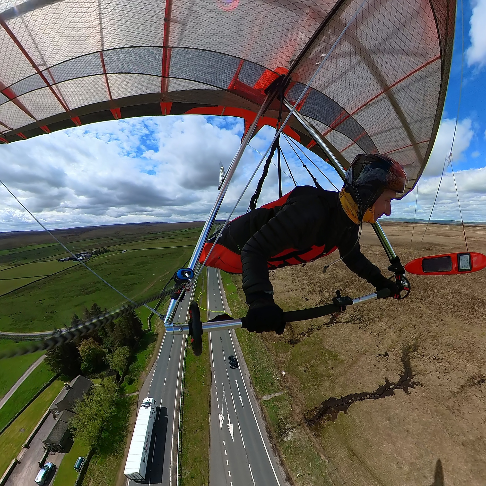
{kind=link}
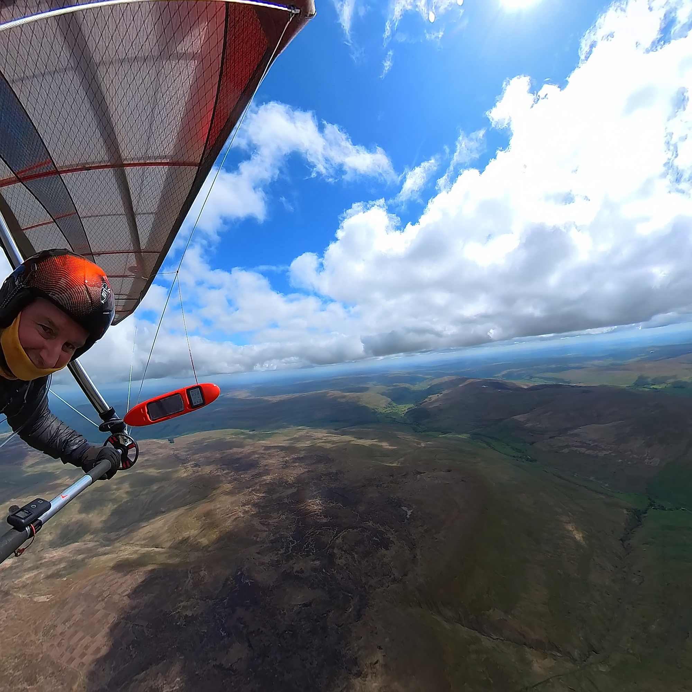
{kind=link}
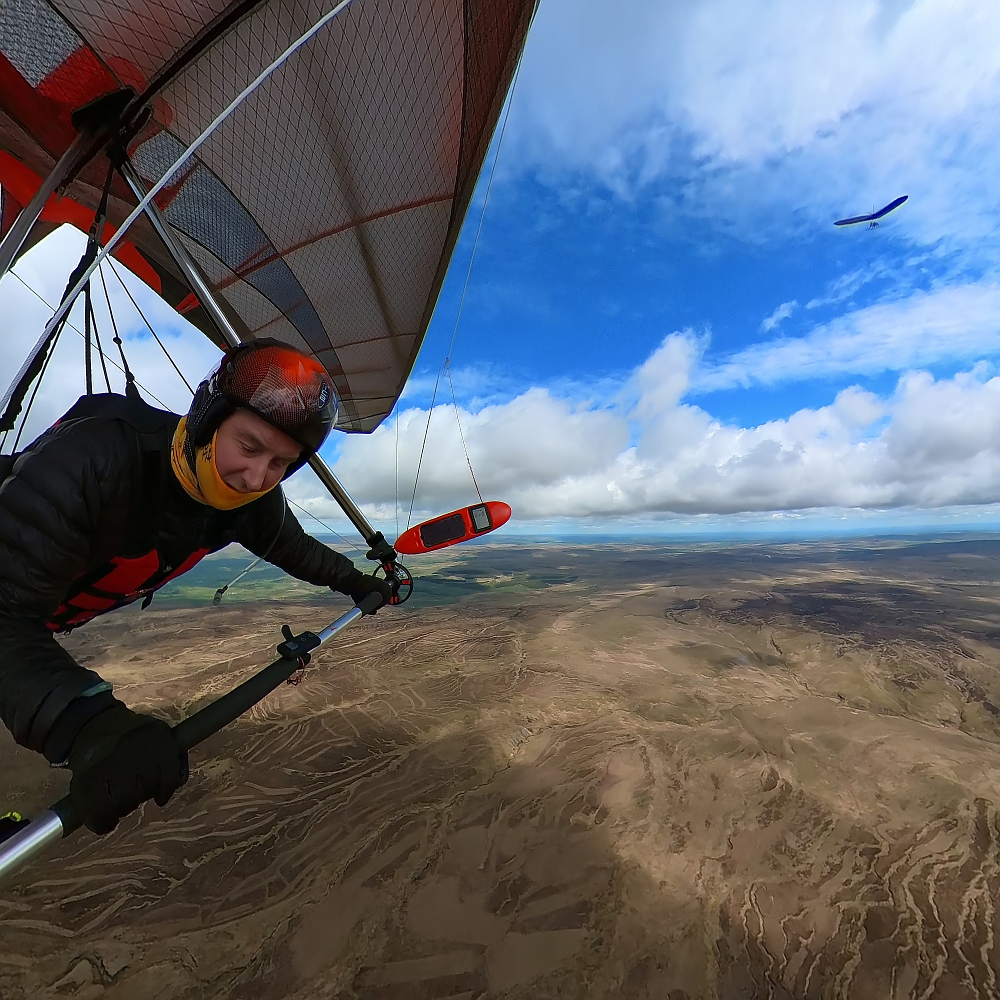
{kind=link}
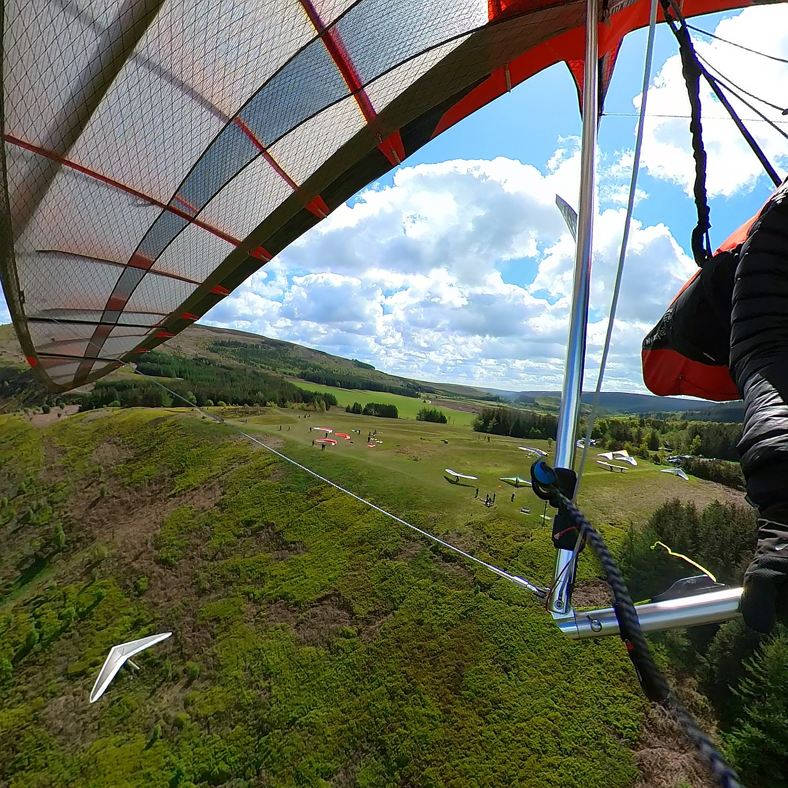
{kind=link}
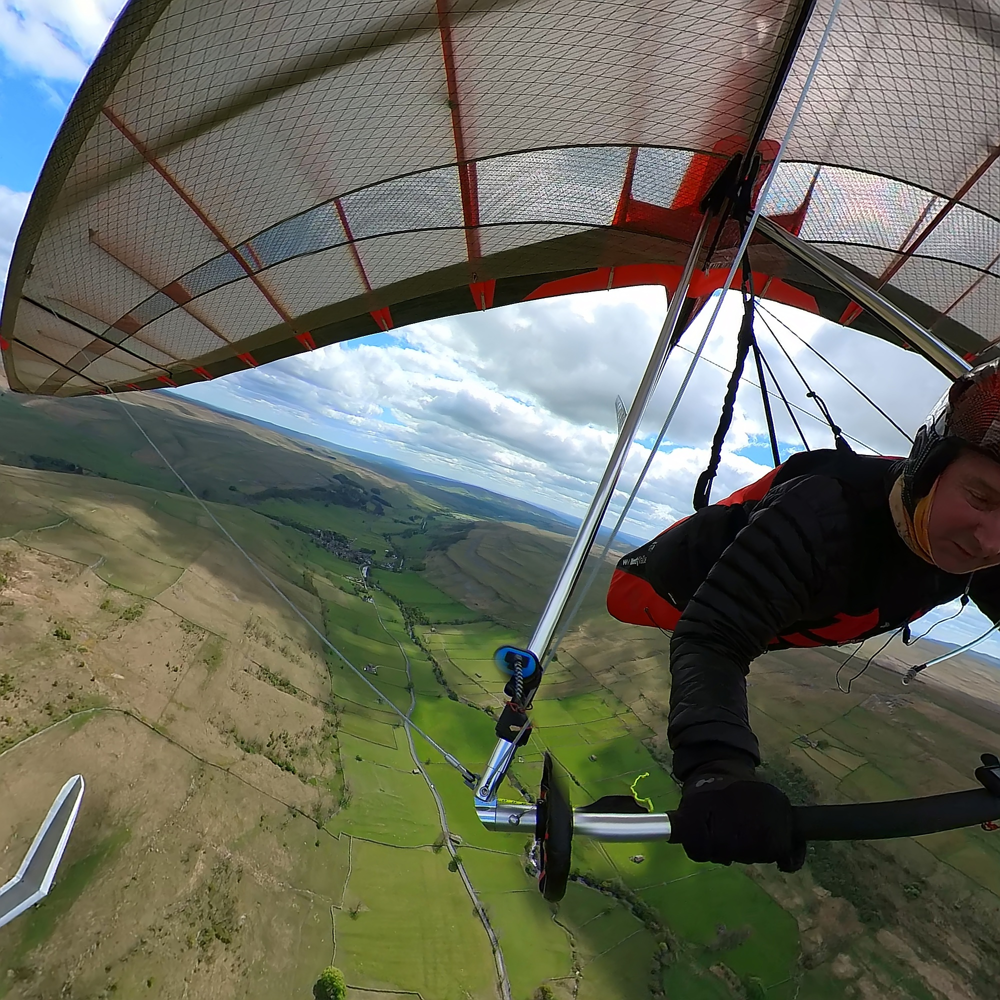
{kind=link}
Videos: Task 1 : Model Ridge - https://youtu.be/vte3D2XzY78 Task 3 : Wether Fell - https://youtu.be/dLB9dH4LM3k Task 4 : Tailbridge - https://youtu.be/oqILldqZ-kA
Dispatches from the North South Cup
Elliott Brown
I’d been vaguely aware of the North South Cup over the years, but not really paying much attention to the event. It was only last year (or the year before) that I noticed the one day that all the top pilots were doing some epic flights in Scotland that I started paying attention. It’s an informal competition between the top 20 northern pilots vs the top 20 southern pilots, picked by team captains, for charity. I’m not in that category, but I’m definitely interested in seeing all the UK sky gods descending onto a site and seeing how far they can get.
Dates are set and then as the run up to the events comes up, discussion is had about where best to go in the country for the best chance of a good cross country flight. I do not envy the task of having to make the weather call for these pilots, but Mr Meek was on form.
I decided I’d sneak along this year, to see what it was all about and get to see all the top pilots fighting for the distance.
08/05/2026
Early start to travel down to Abergavenny, joining Pete Logan and Chris Fountain to pile into one van before heading towards the hill. Bit of a slog up the hill to start, but became a gentle hill to the shoulder that we seemed to be aiming for
{kind=link}
Bloody cold, low cloud, not looking like an amazing cross country day, but a task is set. Lots of parawaiting, a chance to say hello to people and start working on plans and strategies.
{kind=link}
Task 1 - Pen Cerrig Calch to Llandrindod Wells - 41.6km to goal
{kind=link}
People start taking off, a fair few land lower down and tramp back up, lots top land. Very busy and some very keen pilots. People exploring out front where the clouds were breaking. Big gaggles were slowly climbing up and out, meanwhile I watched from take off. Eventually I headed into the sky, after one lower landing, I eventually started thermalling out.
{kind=link}
I headed for the start TP near cloudbase, which was the opposite way i wanted to go, before trying to decide on my next move. I had 2 options on the ridge, I took the wrong side and joined another glider struggling. Looking downwind, and off to the North up the valleys, I could see a fair few wings bumbling about low down. At this point, unless I get a decent thermal out, I’m staying local. It wasn’t long before I was trying to push into wind along the ridge to get back to TO… this got me low down among the bracken, but closer to the cars. Calls for car retrievals were going out and I headed down to Crickhowell to pick up Pete and Chris.
Turns out I didn’t need the start turn point, it was a simple get to goal task…Also, the other option I had on the ridge seemed to be working looking back, oh well.
5 got to goal, 1 - 0 to the North
The crew stayed overnight in a campsite just North of Worcester, where it turned pretty biblical, rain continued to hammer it down most of the evening, so I ended up missing the North South Cup auction (shocking reception). Instead catching up with a couple of pilots huddled under their van tailgate until bed time.
09/05/2026
Early morning trophies were dished out to the winners of the XC League for last year, before we all piled back into our vehicles to head over to the Malverns, for another flight to goal. It took a while to get everyone paid at parking (sooooo slow to take payment) and tramp their way up the hill, but we got to the top and took over half the slope to get ready. Other pilots (not in N/S Cup) went to Kettle Sings (further South) as it was going to be busy. Plenty of walkers on the hill wondering what the hell was going on, but they would get a great show when we got ourselves ready to go.
{kind=link}
Task 2 - Pinnacle Hill West to Neath - 110km to goal
The task was planned to Neath, so we could get the train back to either Colwall, Great Malvern or Malvern Link’s station. Great site to go XC from, decent train connections back via Hereford or Worcester (I think).
{kind=link}
Setting up, it was working pretty well, gusty thermals rolling up the hill, if a little off to the North, but keen pilots were in the air early. I waited a little while, as it’s not a great ridge to soar and you don’t want to get low in the wrong place. Once it turned on, I was up and out, straight into a thermal and over the back. Speaking to pilots who were at Kettle Sings, it sounded like they weren’t as lucky with the thermals, guessing due to the due North.
{kind=link}
As I was getting ready, I bumped into Andy Brown, who I had met and flown with in the SRS in Ager. He was with his daughter going for a tandem flight. It was great to see them as we made our way downwind and they ended up doing a decent cross country flight. Lots of thermal markers to be had.
{kind=link}
{kind=link}
{kind=link}
Flying over Sugar Loaf, with Pen Cerrig-calch to the right, nice to see it from up high, after the flight the day before. I was watching a glider ahead of me climb out of a quarry, so I pushed on from the surviving gaggle, through a few blips of lift to the quarry. I was rewarded with nothing… I hunted around trying different parts and edge, but nothing was working. Mean while the gaggle had caught up and was flying over me. I decided to just risk it and went over the back onto the flat high plateau. Hoping that something would trigger and get me back up.
{kind=link}
I found nothing, other than getting myself further away from any bus service. Watching the gaggle in front, it seemed that a few went down, so I wasn’t the only one. Packed up and started making my way back to the car and to find out how people were getting on.
23 got to goal, the South got 12 into goal, the North’s with 11, 1 - 1
The next day, we planned to head north up the M6 to junction 36, people finding spots to park up and sleep, dive into a nearby hotel or just head home. The destination was still up for debate, but the advice was “Prepare for a 1:15 walk up a steep hill.”
10/05/2026
Task 3 - Cautley Spout to Old Man of Coniston to Barton Fell, return to Cautley Spout - 106.4km FAI
{kind=link}
(Apologies for the over saturated pictures, I’m still getting used to editing the GoPro images)
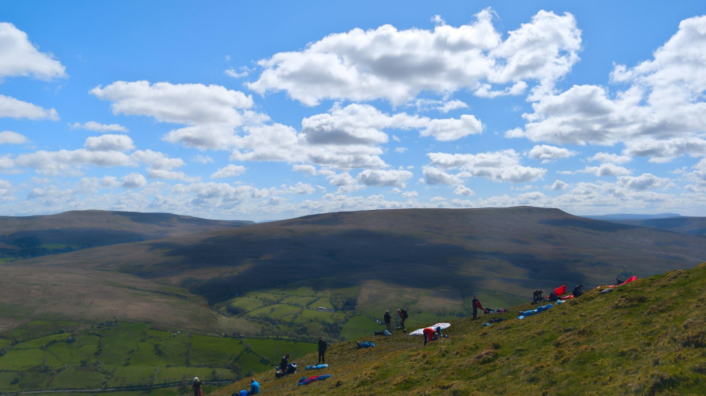
{kind=link}
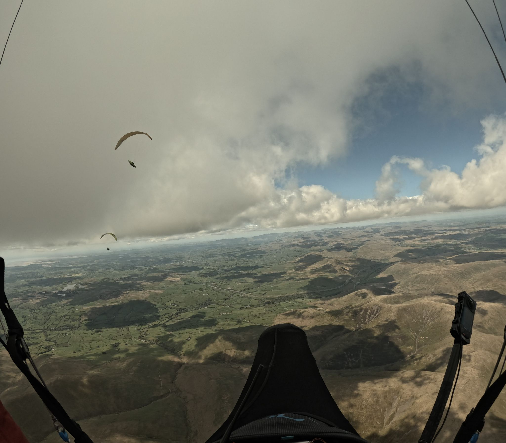
{kind=link}
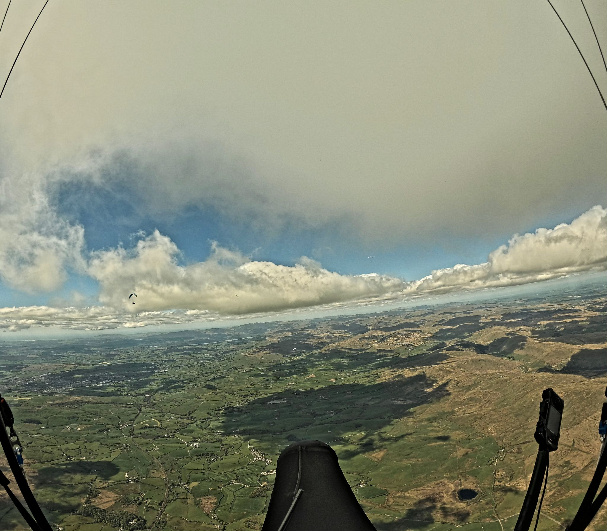
{kind=link}
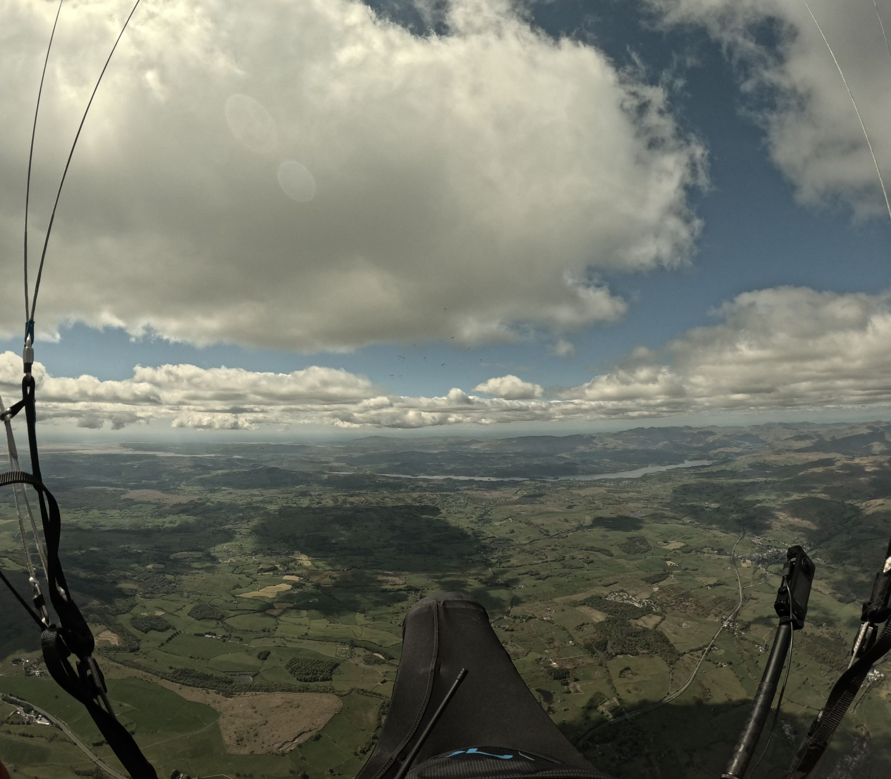
{kind=link}
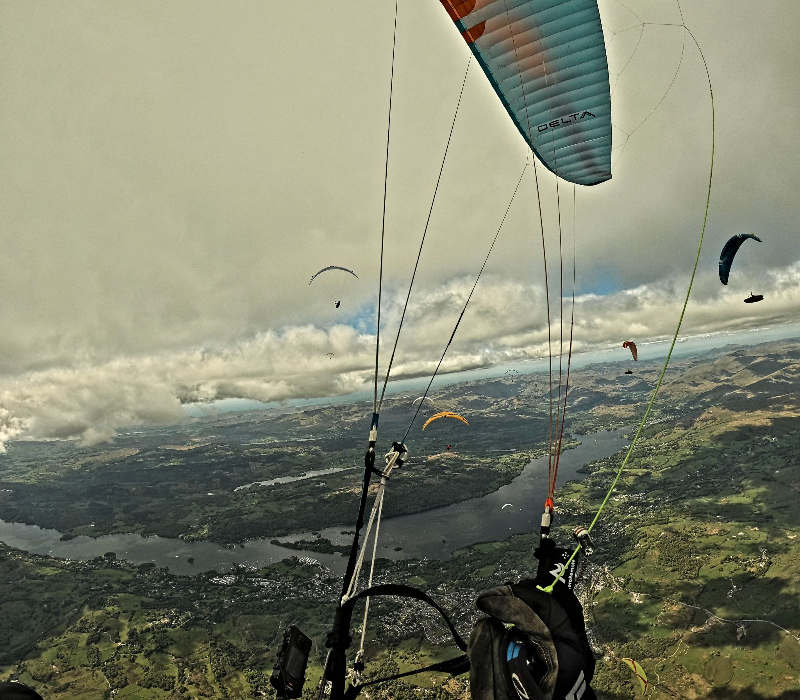
{kind=link}
{kind=link}
{kind=link}
The Gallery


CANPs Are Easy
Neil Charles
Alright, time for a guilty admission. I’ve been flying since 2009 and until this month I’d never filed a CANP (Civil Aircraft Notification Procedure - a notice to warn the military where you plan to be).
It’s just never come up. I fly on weekends and in places where the military don’t. My few trips to the Lake District on a weekday have been for forecasts that saw the hills so busy the locals had inevitably already done it.
I should have filed a CANP a couple of summers back when flying the cliffs in North Wales and maybe if I had then that RAF Texan trainer, which was following the coastline wouldn’t have zoomed low over my head, luckily just after I’d top-landed.
So, finding myself back in the same spot a couple of weeks ago, I thought I’d better had. Most of you probably know there’s an app for that but the app only knows about official paragliding sites and I planned to fly a bit of cliff that gets flown regularly but doesn’t belong to a club.
You can file a CANP for any location you like and the app can still help. Look on the left and you’ll see ’try sending a test’. Fill in your details and it will generate a template like this one but won’t actually send it anywhere.
{kind=link}
Strictly there should be 5+ pilots to file a CANP but the BHPA’s advice is that more pilots will invariably show up on a flyable day even if you don’t know them, as they did on this day.
Copy the test message text, look up the OS grid reference for where you plan to fly and swap it into ‘Location’ with a place name in the same format, then email it to the address on the BHPA webpage. You’ll get a polite email back saying your NOTAM has been activated and that’s it, you can fly the next day with a few less worries that you might have an airprox with a fast jet.
You can check it’s worked the next morning on Notam Map, where your alert will appear.
There you go, easy as that. If you’re flying club sites then the club will usually coordinate to make sure that multiple conflicting requests aren’t sent - as Cumbria does on WhatsApp - and the CANP app will automate the whole process but if you’re on holiday in the wilder bits of North Wales on an unofficial hill and need to DIY, the system works really well.
{kind=link}
Dates For Your Diary
16th - 21st June - British Open Paramotor Cup - Deenethorpe, Northants
18th - 21st June - Lakes Charity Classic - Grasmere, Cumbria
18th - 21st June - X-Lakes Hike & Fly Competition - Grasmere, Cumbria
27th - 3rd July - Sports Class Racing Series French Edition - Annecy, France
17th - 19th July - British Accuracy Cup Round 3 - Woldingham, Surrey
August TBC - British Paragliding Cup European Round
22nd - 29th August - Sports Class Racing Series Spanish Edition - Piedrahita, Spain
5th - 12th September - Paragliding World Cup Siatista - Siatista, Greece
18th - 20th September - BAC Round 4/Super Final - Woldingham, Surrey
7th - 14th November - Sports Class Racing Series Mexican Edition - Tapalpa, Mexico
Your Newsletter Needs You
Appear in the next newsletter! We need submissions for…
A Grand Day Out
2-3 paragraphs describing a fun day. You’re welcome to write more if you’re feeling creative but a couple of paragraphs is plenty. Could be epic, could be daft, could be simply the first time you flew for six months. If you’ve had a good day and you took some pictures, send it in.
Why Not Visit…
A quick guide to a site that you like, at home or abroad. Tell us where it is, what it’s like to fly, any watch-outs and how to contact the locals. Attach a photo and email it over.
The Gallery
Send in any recent(ish) shots with when and where they were taken. Spectacular, silly, from the ground or from the air, it doesn’t matter. Let’s see what you’ve been up to. Videos are very welcome too but pop them on YouTube or Vimeo and send a link for the newsletter.
Shout Outs
First ever XC? Smashed a PB? Took part in a comp? Let us know and get a shout out in the newsletter. Nominate your mates if they won’t do it themselves.
Top Tips
Spotted a bargain? Got a great travel tip? Know how to make Bluetooth connections work on an iPhone? Share your best ideas.
Send submissions on these or anything else you’d like to see featured to editor@penninesoaringclub.org.uk. You can also drop them over using the web form or message Neil on Telegram.
Fly safe
editor@penninesoaringclub.org.uk.